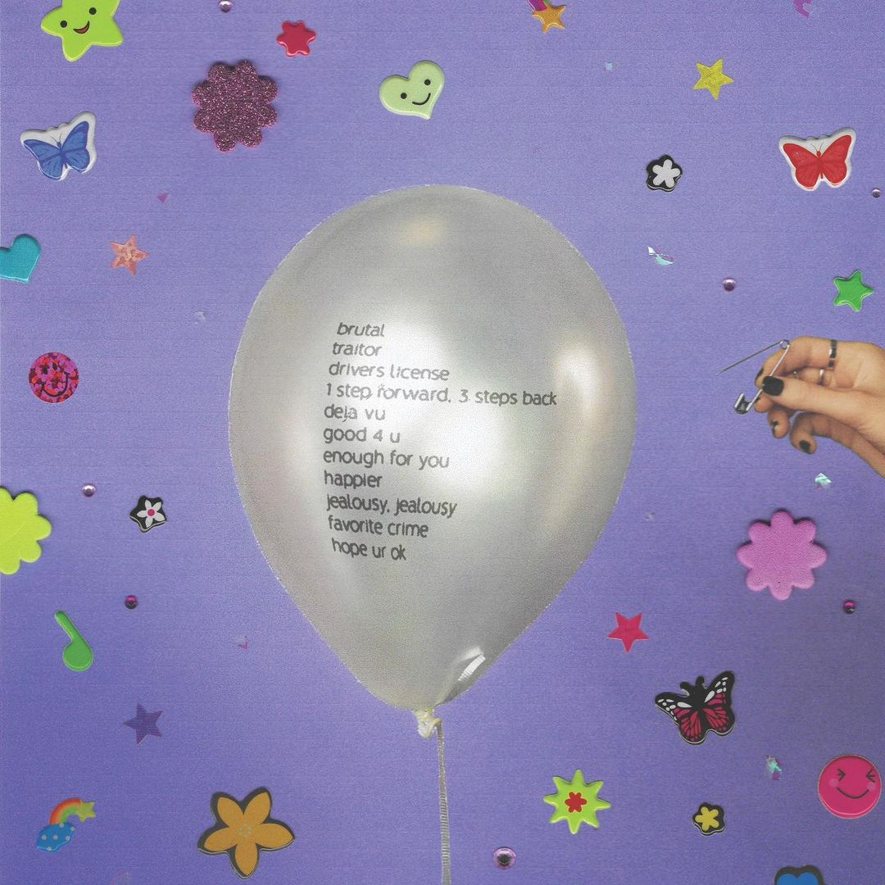
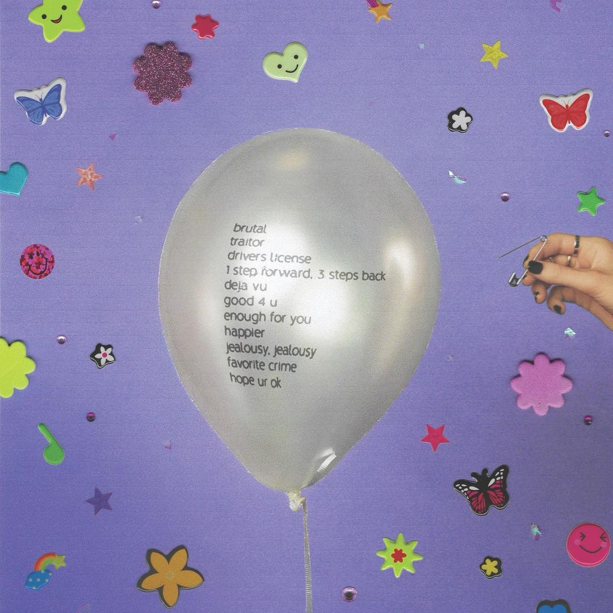
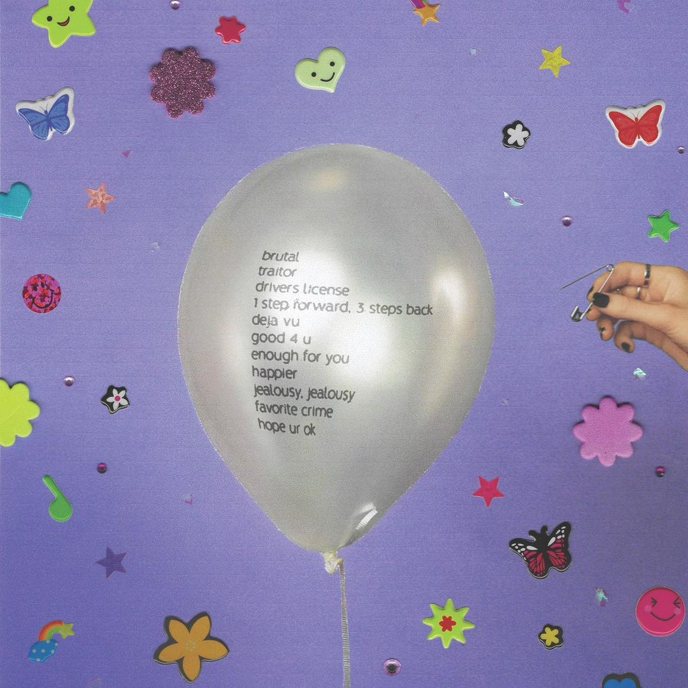
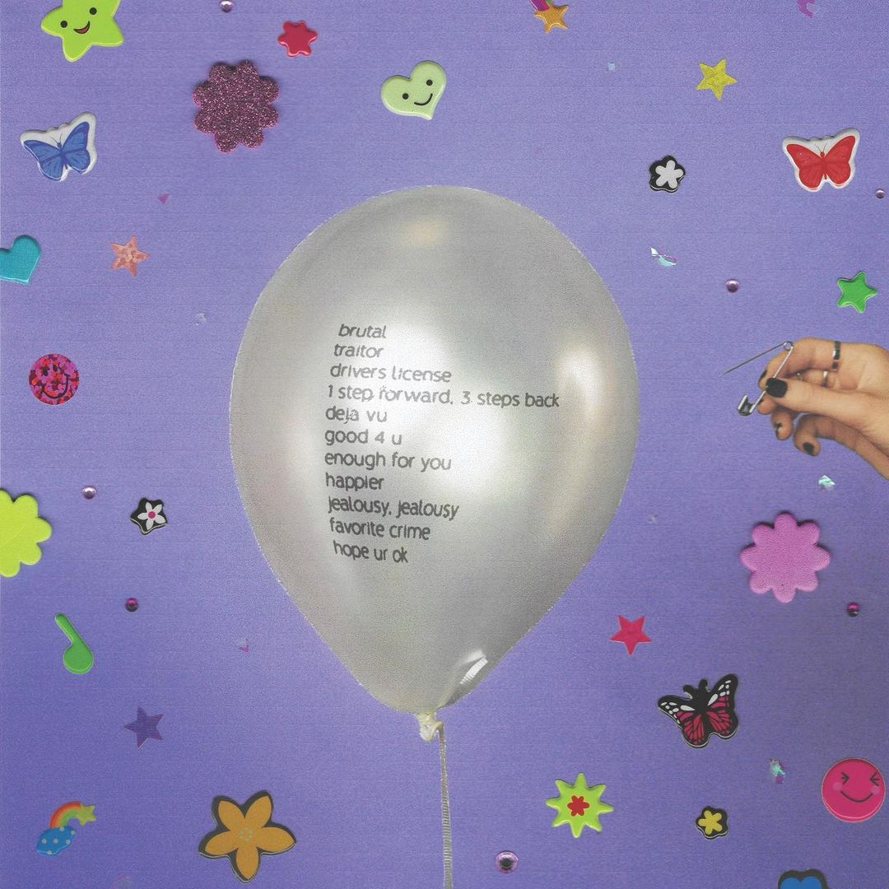

Olivia Rodrigo mal chegou e já está fazendo história! A artista de apenas 18 anos já conquistou a carteira de motorista e um marco na Billboard para sua carreira que só está começando. A mais recente aposta do mundo pop conquistou um grande recorde ao debutar com seus dois primeiros singles “drivers license” e “deja vu” diretamente no top10 da Billboard, renomada revista de musica americana.
Deja Vu”, debutou em #8 no top10 com um lucro de 7 mil, enquanto o single de estreia,“driver’s license”, ficou por semanas em #1. Com a faixa, ela ainda se tornou a artista mais nova a liderar o Hot 100. Poderosa, né? Pelas redes sociais, Olivia contou que o novo álbum chega em 21 de maio e foi intitulado Sour.
O disco de estreia contará com onze faixas. Para a alegria dos fãs, ela também já divulgou a tracklist completa da novidade. Além dos dois singles já lançados, também estarão presentes no projeto: brutal, traitor, 1 step foward. 3 steps back, good 4 u, enough for you, happier, jealousy jealousy, favorite crime e hope ur ok.